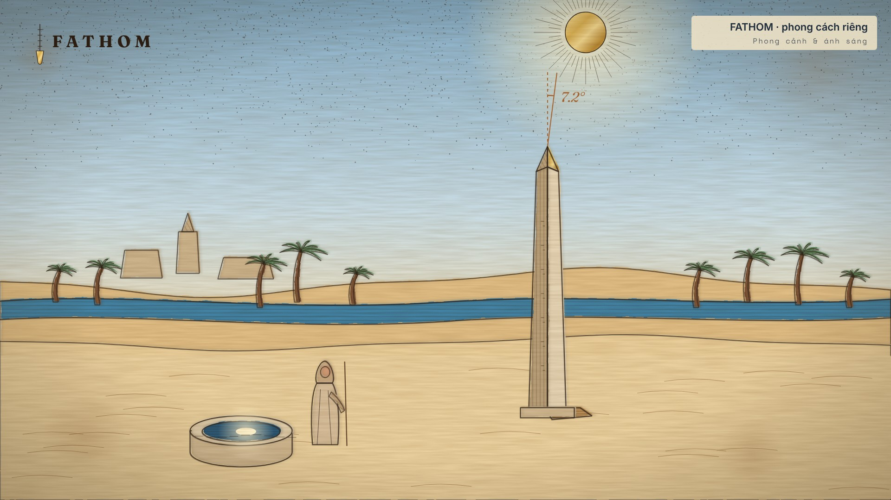
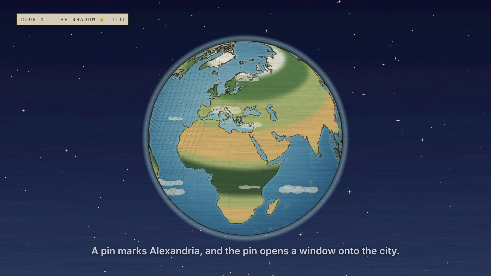
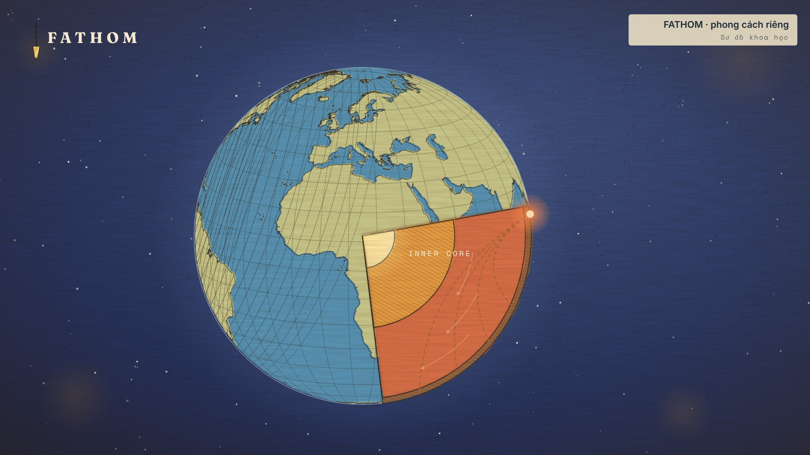
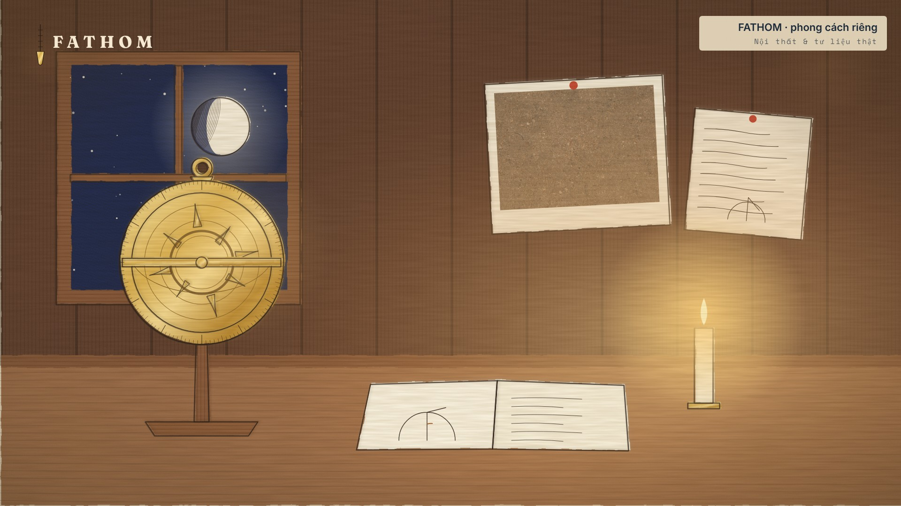
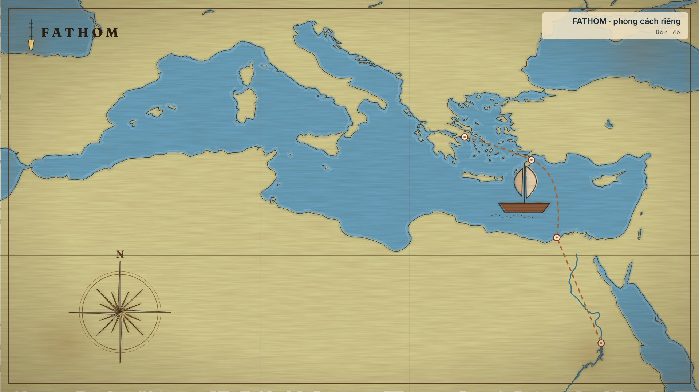

BRAND BOOK · 2026 · v1
Bộ nhận diện FATHOM — logo, màu, chữ, phong cách đồ họa, kích thước nền tảng, câu lệnh tạo ảnh
01 · THE IDEA
FATHOM
Tên, ý nghĩa và câu khẩu hiệu
To fathom means two things: to measure the depth of water with a sounding line — and to understand something completely.
The channel tells how humans came to know things that seemed impossible to know: how far the Moon is, how old the Earth is, what is inside it.
Tagline
How we came to know the world.
Voice
- Calm, curious, precise. Real stories, real evidence, every fact sourced.
- One big question per film, solved through clues, like a case — told as one continuous story.
- Feels like an old scientific atlas that has come to life.

The mark: a sounding line with fathom markers and a gold lead weight, dropping through engraved water, inside a graduated brass dial.
02 · LOGO
Logo
Logo đầy đủ, biểu tượng, bản nền tối — vùng an toàn và cỡ nhỏ nhất
Primary lockup on paper

On night (#141C38)

The mark alone (transparent PNG) — avatars, watermark, end card
- Clear space around the logo = the height of the lead weight.
- Minimum mark size: 48 px (avatar 98 px still reads: gold weight + line + ring).
- Never recolour the gold, never stretch, never add effects (glow, 3D, shadow).
- Wordmark: FATHOM in Fraunces Bold, tracking 25 %, with a gold rule under it.
03 · COLOUR
Palette — pigments on laid paper
Bảng màu: mỗi sắc là một dải sáng → trung → tối; nhũ vàng chỉ dùng cho điểm nhấn
PRUSSIAN BLUE
#9CCAD6 #4A88AE #22507A
VERDIGRIS
#A9C08A #5F8A5A #2F5440
YELLOW OCHRE
#F0D9A8 #D9AE6C #A8743E
BURNT SIENNA
#C99A6A #8C5A36 #4F3020
VERMILION
#F2A672 #D2643E #8C3424
STONE
#EFE0C2 #C9AE84 #8C6E4A
NIGHT
#5A6E9A #2B3B66 #141C38
GOLD LEAF #F7E3A0 → #D9AE4C → #F3D88E → #B8862B
PAPER #F3E7CC
SEPIA INK #2B1D12
Paper under everything, sepia ink for every line, pigment washes for colour, and gold leaf ONLY for the one key thing (the sun, a brass instrument, the brand).
04 · TYPE
Typography
Font chữ — chỉ 3 họ chữ, đều miễn phí (Google Fonts)
Fraunces Bold
Titles, the wordmark, thumbnail words. Tracking +25 % for the wordmark only.
Fraunces Italic — plate captions
Captions under real photos ("Plate I. — …"), the one small label in a frame.
Inter SemiBold — subtitles
SPACE MONO — CLUE TAGS
05 · GRAPHIC STYLE
A hand-coloured engraving, alive
Phong cách đồ họa: tranh khắc đồng tô màu tay — 5 lớp của mọi hình vẽ
- Paper — warm cream laid paper (#F3E7CC) with visible horizontal fibres, a few faint foxing spots, soft warm vignette.
- Wash — gouache/watercolour pigment laid slightly OFF the ink line, edges soft and irregular, darker where the pigment pools at the rim.
- Hatching — fine sepia lines in the shade only, following the form: horizontal on water, along the length of columns, curved on spheres, crossed in the deepest shade. Skies shaded with tiny stipple dots.
- Ink — sepia line with swelling weight: crisp and thin on the lit side, heavier on the shadow side. Coastlines only, never political borders.
- Gold leaf — the only metallic, on the one key object.
Every object is drawn with its real construction (columns, capitals, hieroglyph bands, a person's profile, hands and folds, an instrument's graduations). The Earth is the real Earth: real coastlines, land coloured by climate.

Landscape and light
06 · STYLE IN USE
One style, every subject
Cùng một phong cách cho mọi chủ đề: vũ trụ, sơ đồ, nội thất, bản đồ

The real Earth, climate-coloured, contour-hatched night side

A scientific diagram: inside the Earth

An interior, with a real photo pinned as an artefact

A sea chart with real coastlines
07 · DO / DON'T
Do · Don't
Nên và không nên
Do
- Paper under everything; sepia ink; pigment washes slightly off the line.
- Real construction, real geography, real proportions.
- One warm key light per picture; shade = hatching + deeper wash.
- Gold leaf on ONE key object.
- Real photos/documents as artefacts: pinned, taped, framed, in an eyepiece, with paper border and shadow, toned warm.
- Calm, detailed, generous empty paper.
Don't
- Flat vector, gradients without line, neon, glossy 3D, lens flares.
- Placeholder shapes: circles with blobs, stick figures, emoji, UI icons.
- Political borders on globes; invented maps.
- Real photos as full-screen backgrounds; untoned stock.
- More than one gold object; more than one small label; slides of text.
- AI likenesses of real people; fake documents.
08 · PLATFORMS
Platform assets
Kích thước cho các nền tảng — file PNG trên Drive brand/fathom/
| asset | size | file |
|---|
| Avatar (all platforms) | 2048 × 2048 (circle-safe) | fathom_avatar.png |
| YouTube banner | 2560 × 1440 (safe 1546 × 423) | fathom_yt.png |
| Facebook cover | 1640 × 624 | fathom_fb.png |
| X / Twitter header | 1500 × 500 | fathom_x_header.png |
| Instagram / TikTok | avatar only (1080 crop of the avatar) | fathom_avatar.png |
| Logo / mark | 2400 × 900 · 1200 × 1200 | fathom_logo*.png · fathom_mark.png |
| Video end card | 1920 × 1080 (built into every film) | — |
09 · IMAGE PROMPTS
Prompts for image generation
Câu lệnh tạo ảnh (dán vào ChatGPT) — luôn dán "STYLE" trước, rồi câu lệnh của từng ảnh
STYLE — Hand-coloured engraving in the manner of an 18th–19th-century scientific atlas that has come to life. Fine sepia ink linework (#2B1D12) with swelling line weight (thin on the lit side, heavier in shadow); form-following hatching and cross-hatching only in the shadows; tiny stipple dots to shade skies; gouache/watercolour washes in a limited pigment palette — Prussian blue (#4A88AE), verdigris (#5F8A5A), yellow ochre (#D9AE6C), burnt sienna (#8C5A36), vermilion (#D2643E), stone (#C9AE84), night blue (#2B3B66) — laid slightly off the ink lines, with darker pooled edges; warm cream laid paper (#F3E7CC) with visible fibres and faint foxing under everything; ONE gold-leaf metallic accent (#D9AE4C) on the key object; one warm key light; real construction and real proportions; calm, precise, richly detailed; generous empty paper. No neon, no flat vector, no 3D render, no lens flare, no text unless asked.
AVATAR — [STYLE] A circular brass dial with fine graduations (gold leaf ring) framing a cross-section: cream sky above, Prussian-blue water below with engraved wave lines; a sounding line drops vertically through rings on the water surface, with small cloth fathom markers (white, red, brown), ending in a bell-shaped gold-leaf lead weight. Centered, symmetric, deep night-blue background. Square 1:1, reads at small sizes.
BANNER — [STYLE] Wide panorama, horizon at 60 % height. Above: a dusk sky shaded with stipple, a crescent moon (left), a gold-leaf sun with engraved rays (right), a distant Egyptian shore with an obelisk and palms, a domed observatory on a green headland. Below: the sea in cross-section, engraved waves getting denser with depth, fish, a sandy seabed with strata; an 18th-century sailing ship at the right lowers a sounding line with a glowing gold lead weight to the seabed. Leave the centre third clear for the word "FATHOM". 16:9.
THUMBNAIL — [STYLE] One big subject drawn in the style (e.g. the Moon with a laser beam from a mountain dome), dramatic but calm, 60 % of the frame, a single gold-leaf accent; space on the left for 2–4 words in Fraunces Bold, sepia on paper. 16:9, high contrast at small size.